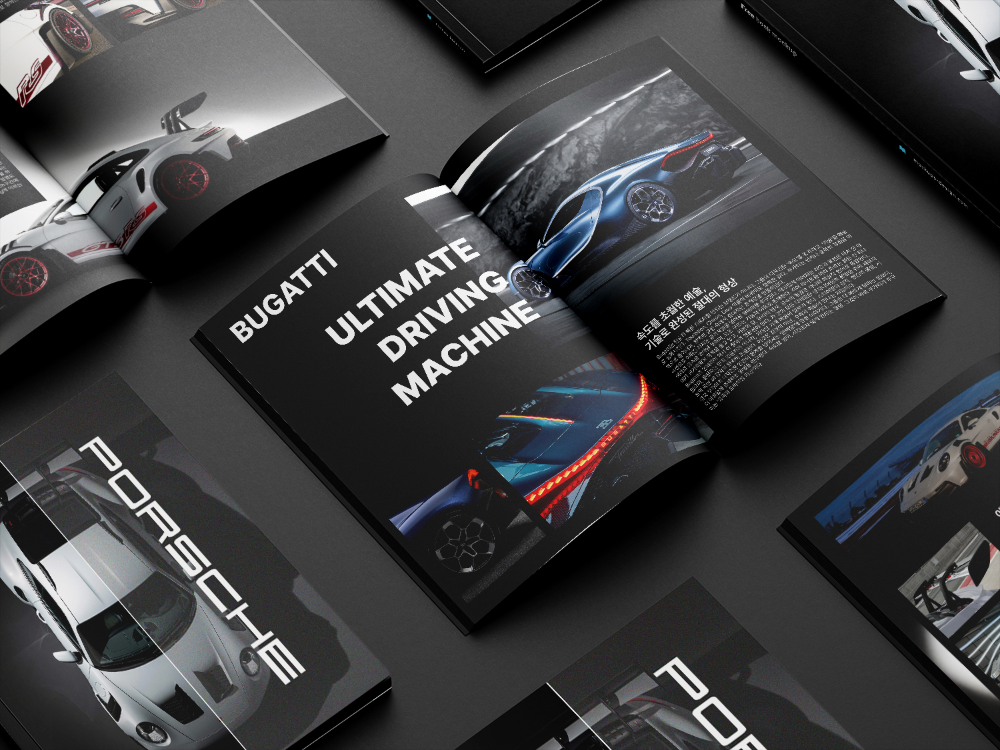
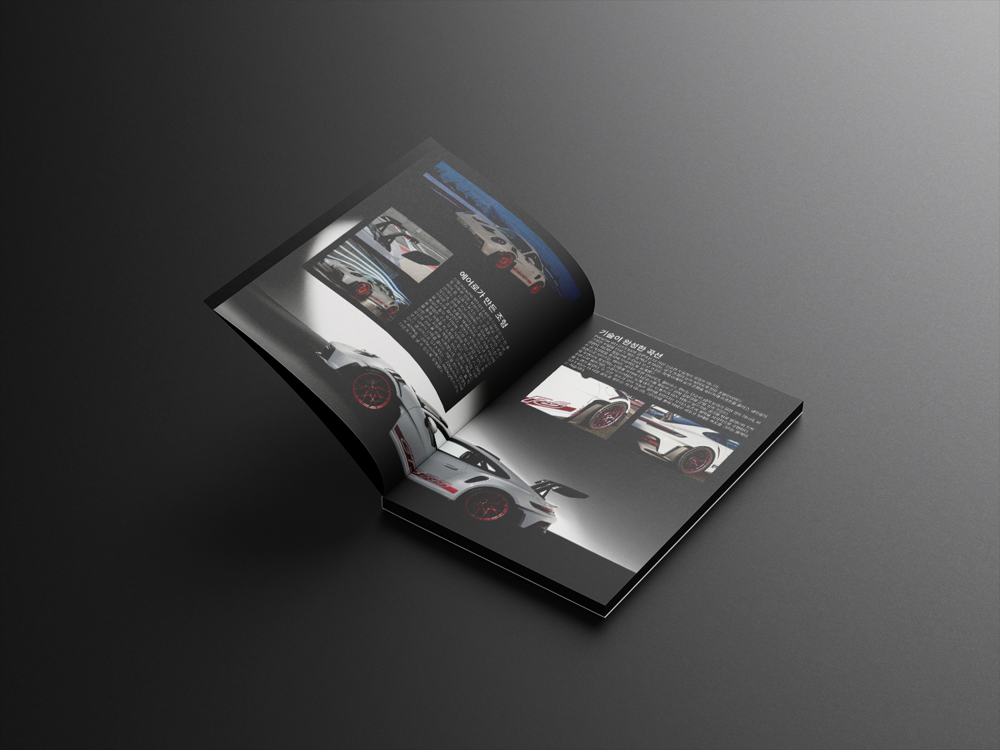
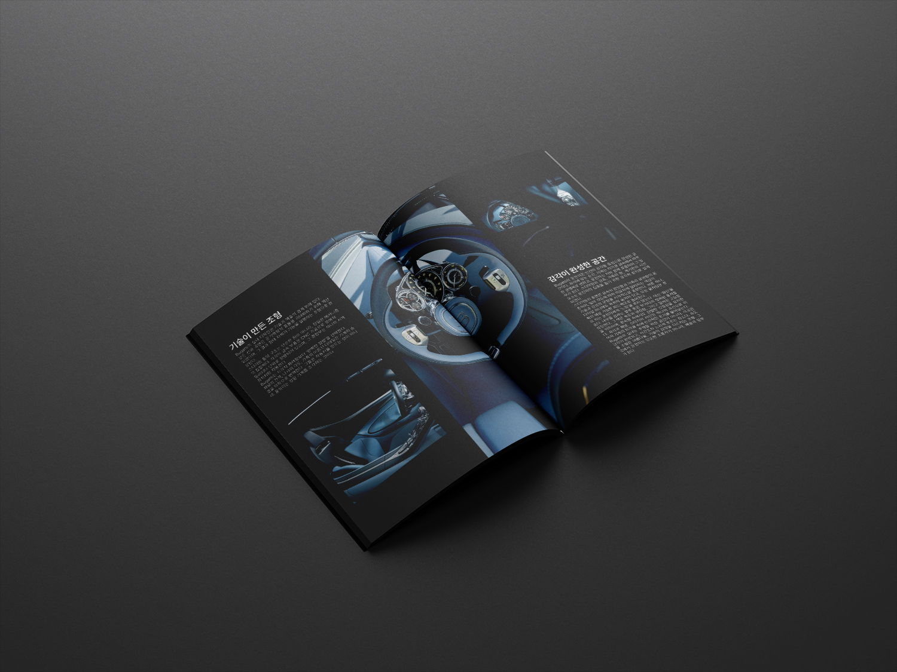

Editorial Design
APXGP는 모터스포츠와 하이퍼카 문화를 다루는 가상의 프리미엄 매거진 프로젝트입니다.
속도감과 긴장감을 타이포그래피와 레이아웃으로 표현하는 것에 집중했습니다. 강렬한 블랙 베이스에 다이나믹한 이미지 배치와 대비 높은 서체 조합으로 레이싱의 에너지를 지면 위에 담아냈습니다.



모터스포츠 매거진 레퍼런스 수집 및 분석. F1, 르망 등 레이싱 문화의 시각적 언어를 조사했습니다.
편집 그리드 및 마진 시스템 설계. 역동적인 이미지 배치를 지탱할 구조적 기반을 만들었습니다.
속도감을 담은 서체 조합 탐색. 블랙 베이스 위에서 강렬한 대비를 만드는 타이포그래피를 완성했습니다.
지면 구성 및 이미지 다이나믹 배치 완성. 레이싱의 에너지를 페이지 위에 시각적으로 구현했습니다.